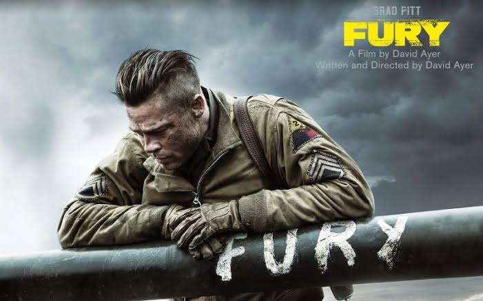
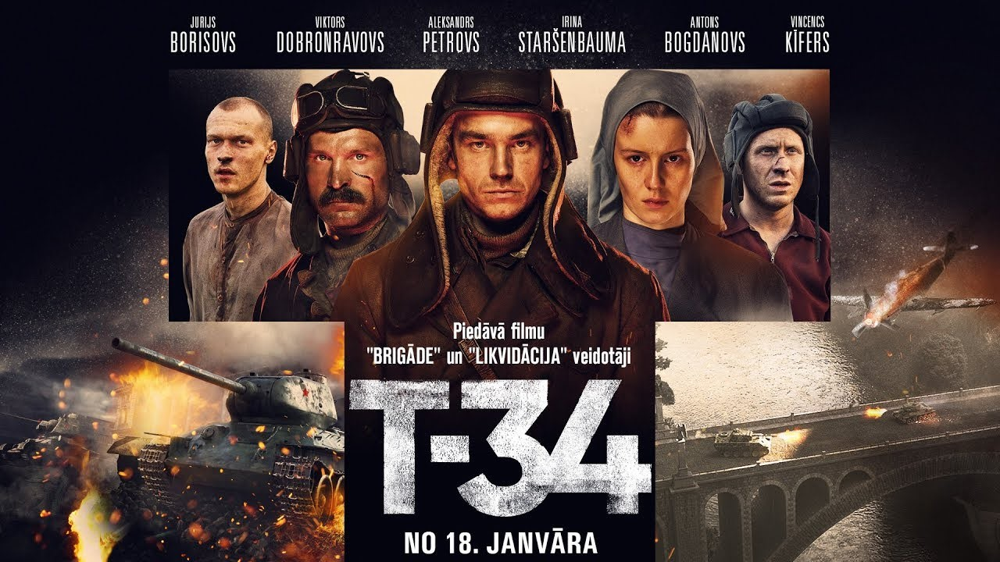

🎞️ My Top 3 Favorite Movies 🎥

วันปฐพีเดือด(Fury)
ภาพยนตร์เรื่อง Fury (2014) บอกเล่าเรื่องราวความโหดร้ายในช่วงสัปดาห์สุดท้ายของสงครามโลกครั้งที่ 2 ผ่านมุมมองของลูกเรือรถถัง Sherman นามว่า "Fury" นำโดย "วอร์แดดดี้" ผู้บัญชาการรบผู้เจนสนามรบ ที่ต้องนำพาพรรรวม 5 ชีวิตบุกตะลุยเข้าสู่ใจกลางประเทศเยอรมัน...

แหกค่ายประจัญบาน(T-34)
ภาพยนตร์เรื่อง T-34 (2018) บอกเล่าเรื่องราวการเอาชีวิตรอดอันน่าทึ่งของทหารโซเวียตในช่วงสงครามโลกครั้งที่ 2 เริ่มต้นด้วยการเผชิญหน้าในสมรภูมิปี 1941 เมื่อ "นิโคไล อิวูชคิน" ผู้บังคับการรถถังหนุ่มชาวรัสเซีย...

รถถังเจ้าพยัคฆ์(The Tank)
ภาพยนตร์เรื่อง รถถังเจ้าพยัคฆ์ (The Tank) บอกเล่าเรื่องราวความกดดันทางจิตวิทยาอันเข้มข้นของลูกเรือทหารนาซีเยอรมัน 5 นาย ประจำรถถังระดับตำนานอย่าง "Tiger Tank" บนแนวรบด้านตะวันออก...
🎥 Top 3 My Favorite Songs 🎬
"แม่สาวผิวเข้ม" [Смуглянка] - Soviet Partisan Song
เพลง "แม่สาวผิวเข้ม" (Smuglyanka) เป็นเพลงมาร์ชพื้นบ้านโซเวียตที่เล่าเรื่องราวความรักของชายหนุ่มทหารบ้านกับสาวมอลโดวาผิวแทนในสวนองุ่นท่ามกลางช่วงเวลาของสงครามโลกครั้งที่ 2
"เมื่อน้ำทะเลเป็นดั่งผืนแผ่นดิน" The Crew is One Family [Экипаж - одна семья] - Soviet Navy Song
เป็นบทเพลงปลุกใจของกองทัพเรือโซเวียตที่สะท้อนถึงความผูกพัน ความสามัคคี และความพร้อมใจของทหารเรือในการปฏิบัติหน้าที่ปกป้องมาตุภูมิร่วมกันประหนึ่งคนในครอบครัว
"ทหารเดินท่องเมือง" A soldier walks through the city [Идет солдат по городу] - Soviet Army Song
เป็นบทเพลงมาร์ชป็อปโซเวียตสุดคลาสสิกที่ถ่ายทอดเรื่องราวความสุขและความมีชีวิตชีวาของทหารหนุ่มในวันหยุดพักผ่อนขณะเดินเที่ยวไปตามท้องถนนในเมือง ท่ามกลางรอยยิ้มของผู้คนและการรอคอยของคนรักที่อยู่ห่างไกล